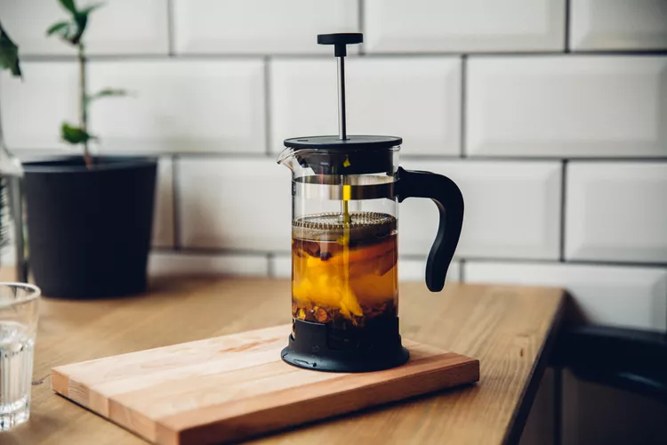

French Press Coffee

Description:
My wife got me a french press and its pretty cool.
Ingredients:
Recipe:
-
Grind the beans with coarse setting.
-
While the beans are grinding (or do this in reverse order) heat some water just under boiling.
-
Put the grinds in the bottom of the french press.
-
Pour the water in the french press and give it a stir.
-
Wait four minutes, then press down on the plunger.
-
Pour and enjoy